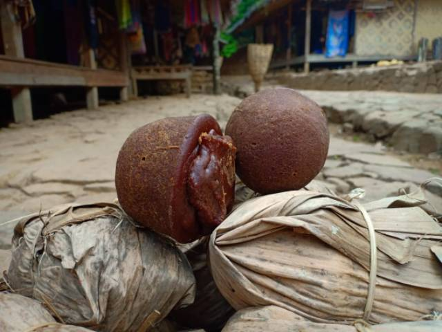

Kain Tenun Kanekes
Contoh halaman produk yang menempatkan cerita dan nilai budaya berdampingan dengan informasi produk.
Cerita produk
Warga Baduy biasa membuat Gula Aren dengan cara sangat
tradisional. Proses dimulai dengan penyadapan air nira aren
sebagai bahan baku Gula Aren. Masih berpegang pada tradisi
lokalnya, penyadap nira dilakukan dengan ritual khusus.
Mantra-mantra pun dilantunkan saat proses penyadapan hingga
pembuatan Gula Aren. Mereka berpendapat, pohon kawung adalah
mahluk hidup yang harus dihargai dan bisa memberikan kehidupan
kepada mahluk lainnya, termasuk manusia.
Transaksi belum aktif. Tombol ini hanya mensimulasikan alur calon pengguna.